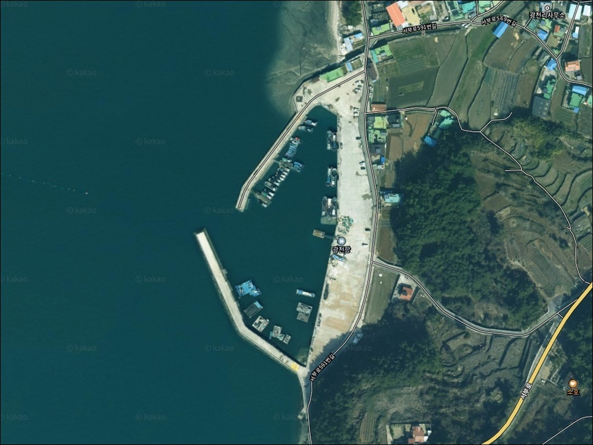
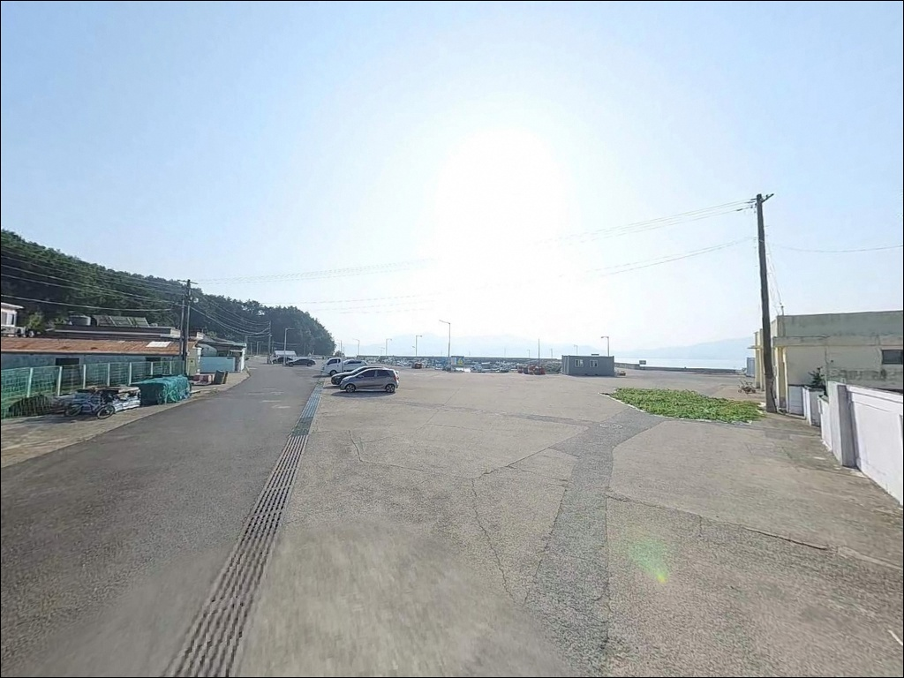
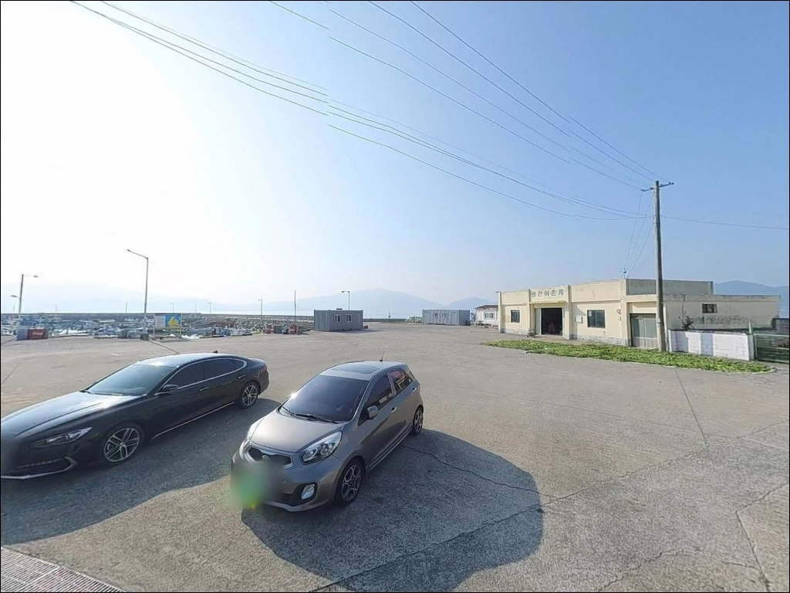
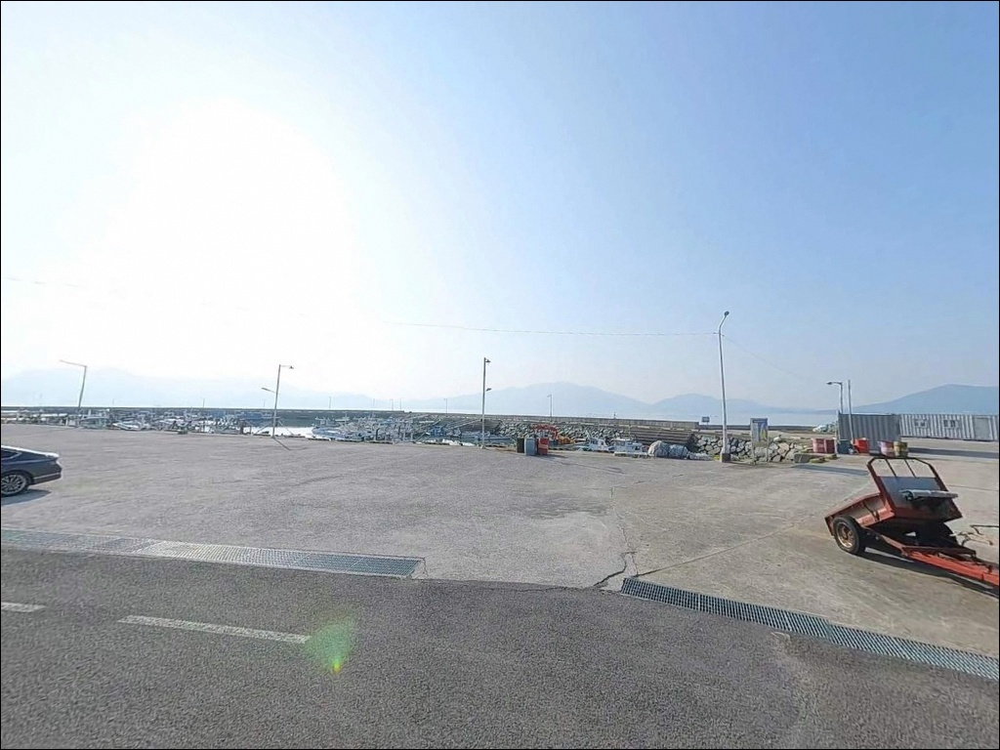
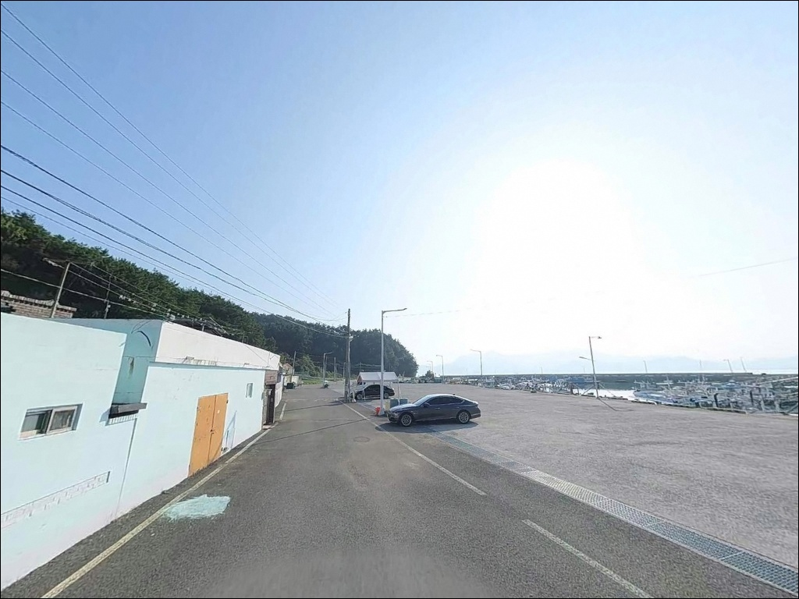
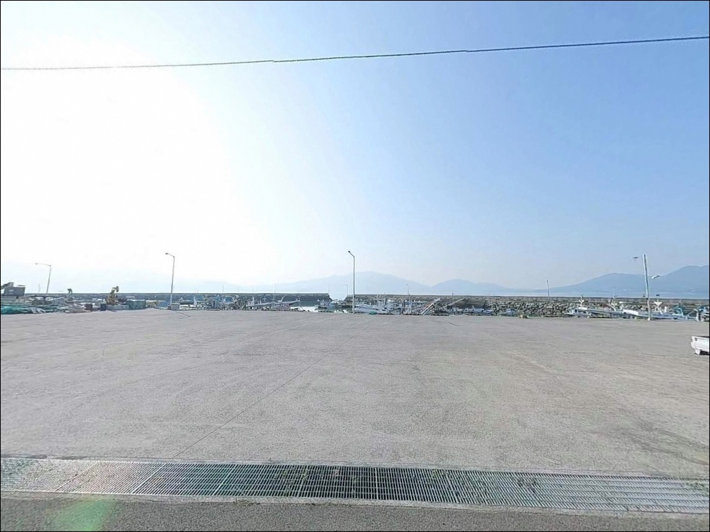
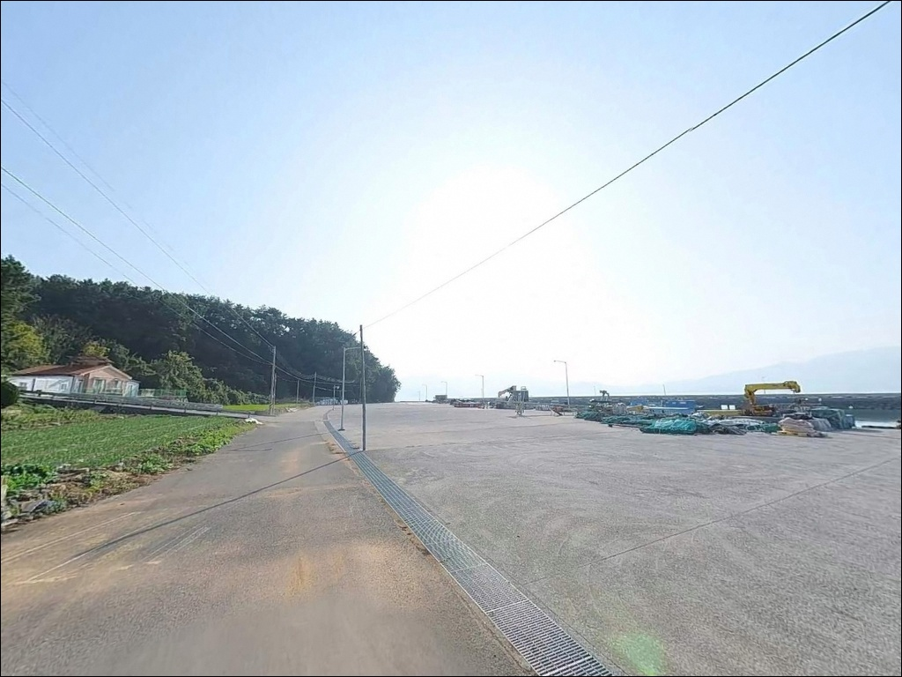
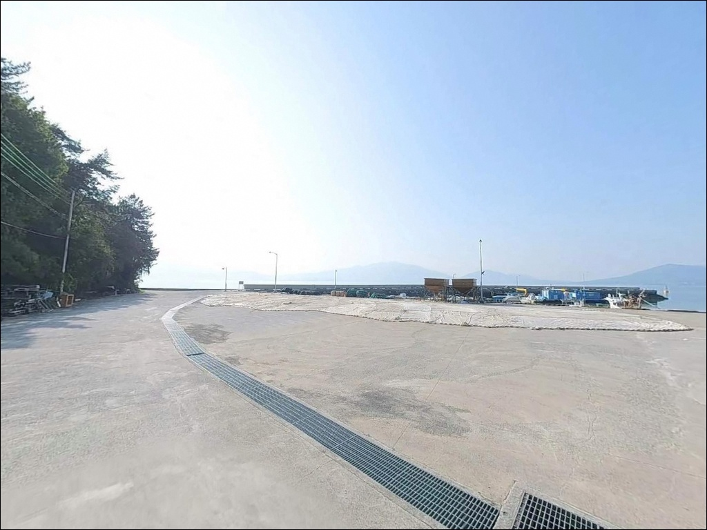
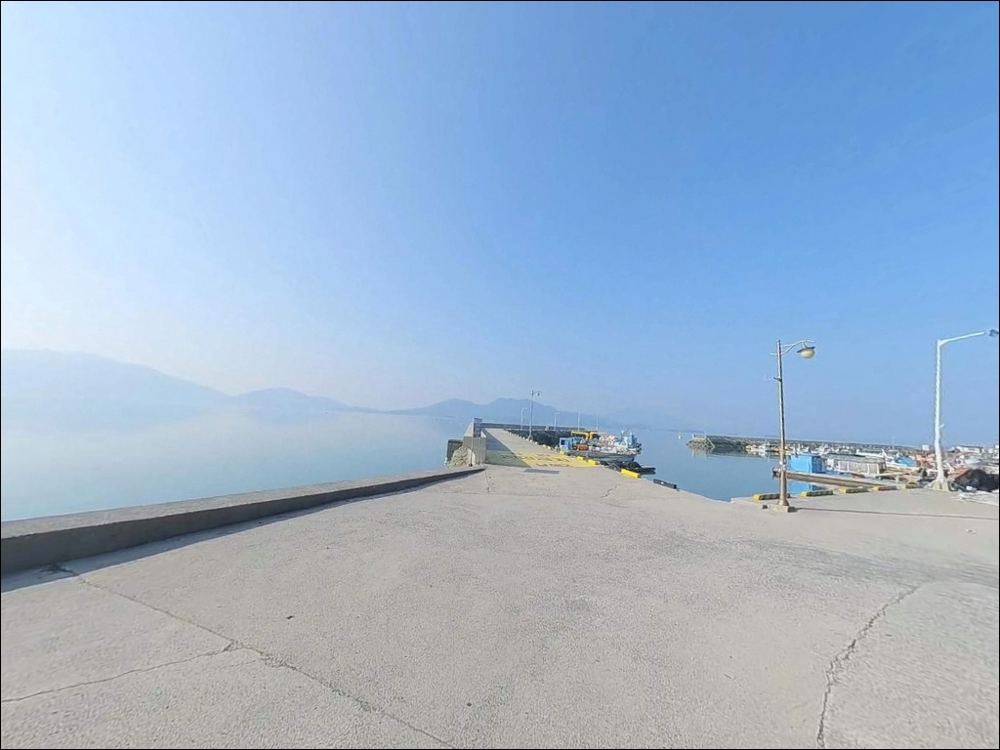

30호 봉돌도 굴러가는 강조류, 남해 광천항 원투낚시 물돌이 타임에 들어온 입질


포인트 안내
광천항 (광천방파제)
경남 남해군 창선면 광천리 654-4
지족해협 방향으로 조류가 쏟아지는 구조에서
물때 계산 없이 입장하면
30호 봉돌도 채비가 버티지 못합니다.
광천항은 조류가 빠르기로 알려진
지족해협 인접 포인트로,
물때와 채비 선택이 조과의 전부를 결정하는
방파제 낚시 포인트입니다.
경남 남해군 창선면 광천리,
창선도 서쪽 해안에 자리한 광천항은
2005년 지정된 지방어항으로
방파제 120m와 선착장 120m를 갖춘
중형 규모의 낚시 포인트입니다.
지족해협 죽방렴 설치 구역과 인접해 있어
조류 흐름이 뚜렷하고 어종 회유가 반복되는
해역 조건을 갖추고 있습니다.
이 글은
광천항의 진입 동선, 차박 여건,
물때 판단 기준, 낚시 스타일별 공략 조건에 집중합니다.
조황 단정이나 특정 어종 보장은
이 글의 범위에 포함되지 않습니다.

1. 진입 동선과 포인트 접근성
광천항은 창선삼천포대교를 건너
창선도에 진입한 뒤
1024번 지방도에서 광천리 방향으로 분기하면 닿습니다.
서대리와 율포리를 거치는 해안 마을 도로지만
전 구간 아스팔트 포장 상태이며,
방파제 끝단까지 차량 진입이 가능한 폭이
확보되어 있습니다.
방파제 상단 폭이 넓어
중형 SUV까지 끝단 진입과 회차가 가능합니다.
항 입구 선착장 공터에는
20대 이상 주차가 가능하며,
차량을 낚시 자리 바로 뒤에 세우고
차박과 낚시를 동시에 운용할 수 있는 구조입니다.
어선 하역 시간대에는
선착장 진입로를 어선 통행에 우선 양보해야 합니다.
주차 위치는 어선 동선을 막지 않는
공터 우측을 기준으로 잡는 편이
현장 매너에 맞습니다.

2. 차박 환경과 야간 체류 여건
광천항은 방파제를 따라
가로등이 일정 간격으로 설치되어 있어
야간 시야 확보가 양호한 편입니다.
마을과 어느 정도 거리를 두고 있어
야간 낚시 중 소음 민원 부담이 적은 구조이지만,
민가와 완전히 분리된 노지 환경은 아닙니다.
차박은 선착장 공터에서 차량을 세우고
방파제 바로 앞에 머무는 방식으로 운용합니다.
지족해협 조류 소리가 들릴 정도로
유속이 빠른 해역이라
파도 소음보다 조류 흐름 소리가
야간 내내 이어지는 편입니다.
서남향 개구부 구조상 겨울철 서풍이 직접 들어오므로
바람 방향을 사전에 확인해야 합니다.
심야 차박 중 엔진 공회전이나 음악 재생은
어촌 마을 인접 구역에서 민원 원인이 됩니다.
야간 체류 중 라이트 매너와
쓰레기 현장 수거는 기본 원칙입니다.


3. 주변 편의시설 및 인프라 현황
광천항 입구 공중화장실은
포구 진입로 인근에 위치하며 상시 개방됩니다.
이 점은 장시간 낚시와 차박 체류에서
남해 창선도 소형 어항 중 비교적 갖춰진 조건입니다.
편의점과 낚시점은
창선면 소재지까지 차량으로 약 5분 거리에
농협 하나로마트와 편의점이 있습니다.
부족한 채비나 식자재는 출발 전
이 동선에서 해결하는 편이 효율적입니다.
항 반경 1km 이내 편의점은 없는 구조이므로
현장 도착 전 완비가 원칙입니다.
응급 상황 시 창선면 내 보건소 분소까지
약 5km 거리이며,
대형 병원은 사천시 방면으로
차량 20분 이상 소요됩니다.
비상약품과 수분 준비는 출발 전 갖추는 것이
기본입니다.

4. 광천항 방문 전 조류가 조과를 결정하는 이유
광천항을 방문하기 전
가장 먼저 확인해야 할 것은 물때입니다.
지족해협은 국내에서 조류가 빠른 해역으로 손꼽히며,
사리 전후에는 어떤 채비를 써도
바닥에 안착하기 어려운 수준으로 흐름이 세집니다.
바다타임에서 광천항 기준 물때를 확인하고
조금 전후 또는 물돌이 시간을 노려
입장 시각을 맞추는 것이 기본 전략입니다.
원투낚시를 주력으로 한다면
30호 이상의 고부력 봉돌을 준비해야 합니다.
조류 저항이 적은 가는 라인을 병행하면
채비가 더 안정적으로 바닥에 닿습니다.
채비 손실을 감안한 여분 준비는 필수입니다.
광천항 방파제 외항 석축 구간은
만조 시 미끄럼 위험이 있습니다.
야간 낚시 시 헤드랜턴은 필수이며,
구명조끼는 방파제 끝단 진입 시
반드시 착용해야 합니다.
광천항 인근 죽방렴은 어민들의 조업 시설이므로
채비가 죽방렴에 걸리지 않도록
투척 방향을 미리 확인하는 것이 현장 매너입니다.

5. 지형 기반 낚시 여건 분석
광천항의 핵심은 지족해협과 맞닿은
외항 구조에 있습니다.
방파제 끝단은 수심이 급변하는 구간으로,
간조 시 3~4m, 만조 시 7m 내외를 유지합니다.
방파제 외항 석축으로 마감되어 있어
테트라포드보다 발판이 안정적이고
낚시 자리 선택의 폭이 넓은 편입니다.
바닥은 모래와 뻘이 섞인 사질대 사이사이에
수중 여가 발달해 있습니다.
이 구조는 바닥층 어종이 은신하기 좋은 지형이며,
조류가 흐르는 구간에 베이트가 모이는 형태를
만들어냅니다.
방파제 끝단 외측 라인이 핵심 공략 구간이며,
내항은 조류 영향이 줄어 찌낚시에 적합한
잔잔한 수면 조건을 보여줍니다.
대방산 발원 하천이 항으로 유입되는 구간이 있어
담수와 해수가 혼합되는 조건도 존재합니다.
이 수로 경계선은 어종이 모이는 조건을
만들어내는 경향이 있습니다.
최신 조황은 출조 전 반드시 검색해 보시기 바랍니다.


6. 포인트에 어울리는 낚시 스타일
이 포인트의 첫 번째 주력 방식은
원투낚시입니다.
방파제 끝단에서 지족해협 방향으로 투척하면
봄철 도다리, 가을철 감성돔과 붕장어를
기대해 볼 수 있는 해역 조건입니다.
조류가 느려지는 물돌이 타이밍에 집중 공략하면
바닥층 안착 시간을 확보하기 수월합니다.
찌낚시는 외항 석축 구간에서
감성돔을 노리는 방식으로 어울립니다.
조류가 죽는 물돌이 시간에
막대찌 채비로 입질을 예민하게 파악하는 방식이
이 포인트 구조에 잘 맞습니다.
조류 방향에 따라 내항·외항 전환이 가능해
복수 자리를 유연하게 운용할 수 있습니다.
에깅과 루어낚시도 이 포인트에 적합합니다.
가을철 갑오징어 시즌에는
방파제 끝단 야간 에깅이 유효하며,
바닥층을 긁는 채비 운용에 반응이 옵니다.
야간에는 가로등 주변으로 모이는 볼락을 대상으로
소형 지그헤드 루어낚시도
성행하는 편입니다.

7. 대안 포인트와 플랜 B 동선
광천항 조류가 너무 강하거나
주차 공간이 꽉 찬 경우라면
북쪽으로 약 3km 거리의
지족방파제가 첫 번째 대안입니다.
창선면 동일 해역에 속해 어종 패턴이 비슷하고,
죽방렴 주변 생활 낚시 여건도
갖추고 있습니다.
창선삼천포대교를 건너
경남 사천시 방면으로 이동하면
약 10km 거리에 삼천포항이 있습니다.
국내 남해안에서 낚시 거점 항으로 손꼽히는 곳으로
방파제 규모가 크고 조황 정보도 풍부합니다.
편의점·낚시점·식당이 항 주변에 밀집해 있어
광천항 방문 전 사전 보급 거점으로도 활용됩니다.
창선면 서부로를 따라
사포항(약 4km)과 신흥항(약 3km)도
대체 낚시 포인트로 고려할 수 있습니다.
사포항은 방파제 길이가 길고 수심이 깊어
광천항 조황이 여의치 않을 때
이동 효율이 좋은 편입니다.

조류를 이해하면
광천항이 달라 보입니다
원투낚시나 찌낚시를 즐기는 낚시인이라면
광천항은 지족해협 조류를 활용하기 좋은
구조적 조건을 갖추고 있습니다.
방파제 끝단까지 차량이 진입되는 환경이라
장비를 내리고 바로 낚시를 시작할 수 있어,
편의성 면에서 창선도 권역 중
상위에 드는 포인트입니다.
반면 물때 계산 없이
사리 전후에 찾아가거나,
채비 무게를 조류 속도에 맞추지 않으면
어느 방식으로도 바닥을 잡기 어렵습니다.
물때 확인, 고부력 봉돌 준비, 죽방렴 투척 방향 체크,
이 세 가지를 갖추고 간다면
지족해협 조류를 제대로 활용할 수 있는
출조가 됩니다.
가로등이 갖춰진 방파제에서
야간 에깅이나 볼락 루어를 즐기고
차에서 하룻밤 머물기에도
광천항의 인프라 여건은 나쁘지 않습니다.
창선면 소재지 보급망을 활용하면
낚시와 차박을 묶어 하루를 알차게 쓸 수 있습니다.